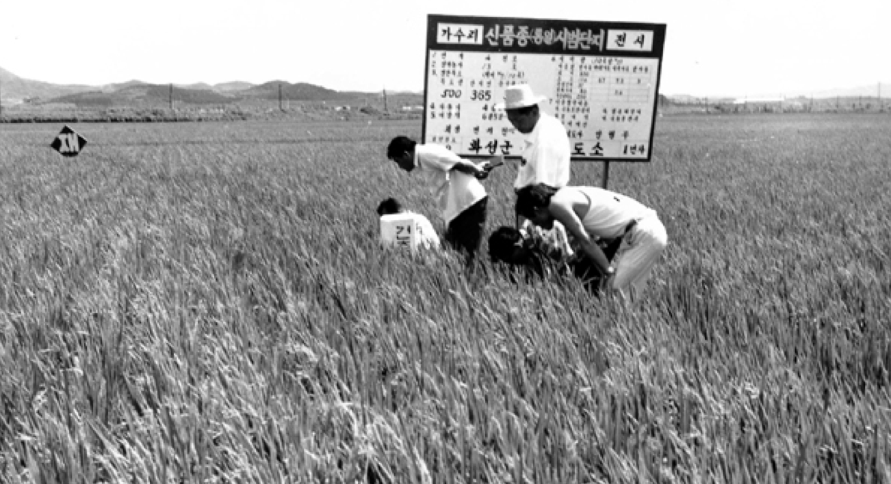
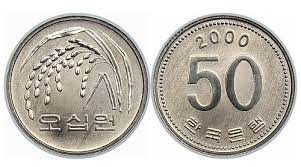
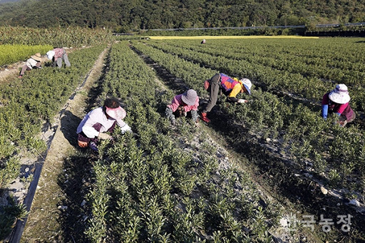
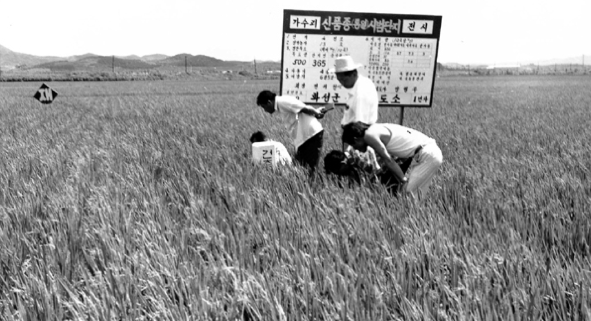
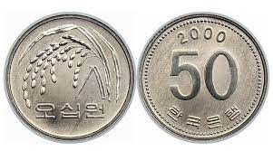
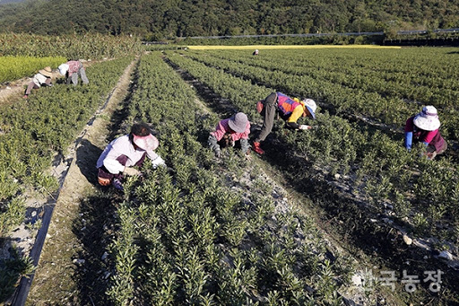
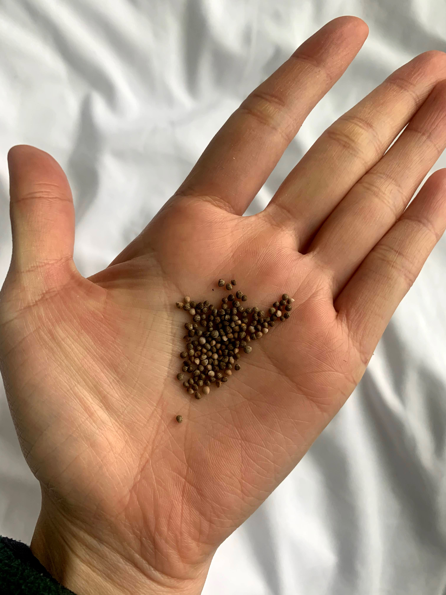
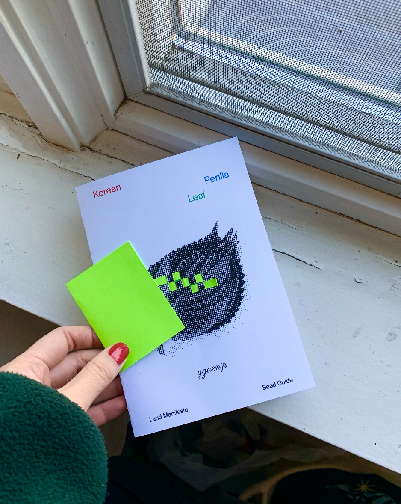
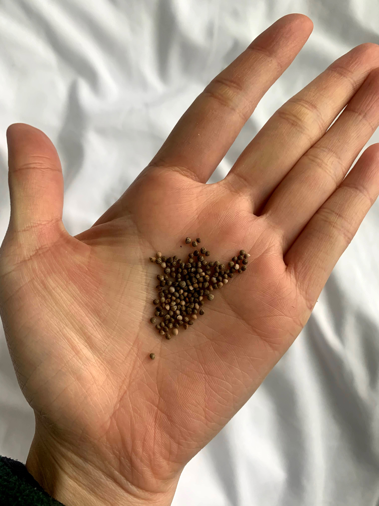
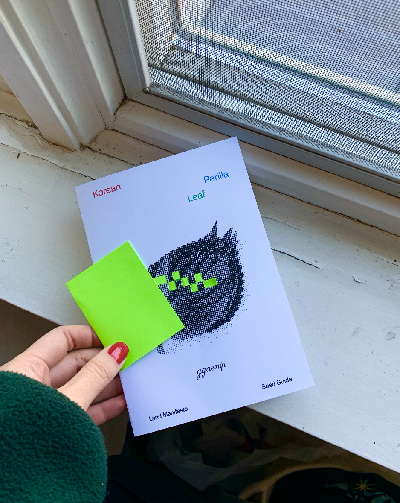

Land Manifesto: Decolonizing Agriculture ⚘
In 1970, the South Korean government pushed for “the green revolution” under president Park’s authoritarian regime. Korea was in the process of transforming into an industrial society from an agricultural community and this transformation came with a globalization of the market and radically capitalized values.
 The Green Revolution
South Koran government was promoting chemical fertilizers, GMO’s, and foreign seeding/breeding technology heavily influenced by the west to compete in trade treaties such as UR(Uruguay Round), WTO(World Trade Organization), and FTA(free trade agreement). This aggressive development suddenly invaded our land and declared our practices as ‘primitive’. It threatened our ecosystem and food sovereignty. Female farmers of this agronomy community witnessed this alarming deterioration and decided they needed to take action. They started their own revolution, created a movement called Wooritutbat Project (우리텃밭 사업, Our land project). They continued the tradition of organic practice, focusing on biodynamic and indigenous farming methods. This significantly re-generated the land and promoted vibrant ecosystems for the soil, insects, animals, and microbes. 
Korean 5 cent coin — created in the 80s to memorize and celebrate the historic green revolution movement
This farming revolution built its own food supply system from the ground up as well: organic, affordable, and community-focused/led. They established their own infrastructure, creating a direct transactional system between farmers and consumers. This model has been successful in terms of providing fresh, seasonal vegetables and crops directly to consumers. Also, it allowed farmers to take back financial ownership and food sovereignty in the market. 
The mothers of our land knew when our land was being colonized and gracefully fought back and still continuing the fight. Through this research, I hope to honor Korean female farmers’ incredible resilience and carry the spirit in solidarity ❃
 The Green Revolution
South Koran government was promoting chemical fertilizers, GMO’s, and foreign seeding/breeding technology heavily influenced by the west to compete in trade treaties such as UR(Uruguay Round), WTO(World Trade Organization), and FTA(free trade agreement). This aggressive development suddenly invaded our land and declared our practices as ‘primitive’. It threatened our ecosystem and food sovereignty. Female farmers of this agronomy community witnessed this alarming deterioration and decided they needed to take action. They started their own revolution, created a movement called Wooritutbat Project (우리텃밭 사업, Our land project). They continued the tradition of organic practice, focusing on biodynamic and indigenous farming methods. This significantly re-generated the land and promoted vibrant ecosystems for the soil, insects, animals, and microbes. 
Korean 5 cent coin — created in the 80s to memorize and celebrate the historic green revolution movement
This farming revolution built its own food supply system from the ground up as well: organic, affordable, and community-focused/led. They established their own infrastructure, creating a direct transactional system between farmers and consumers. This model has been successful in terms of providing fresh, seasonal vegetables and crops directly to consumers. Also, it allowed farmers to take back financial ownership and food sovereignty in the market. 
The mothers of our land knew when our land was being colonized and gracefully fought back and still continuing the fight. Through this research, I hope to honor Korean female farmers’ incredible resilience and carry the spirit in solidarity ❃
Korean Indigenous Seeds - Seed Sovereignty ✽
Seed Sovereignty
Commercialization of food, mass-produced agriculture, and seeds that have been transferred as property of large corporates. GMO seeds are threatening farmers in the name of intellectual property rights and patents. Seeds trapped in royalty no longer belonging to this land.
Unsustainable seeds
GMO companies insist payment of license or royalties. They use Genetic use restriciton technology(GURT)1 , also known as terminator technology or suicide seeds, is the name given to these methods that designed plants only germinate once to increase profits. FI varieties, Terminator 2 and Tractor, etc. are disposable seeds that farmers must purchase each year. In addition, because of its limited vitality, it cannot survive without relying on chemicals, so it can only grow with appropriate pesticides.
Land Manifesto
Native seeds have been proven to have stable yields every year because the seeds and traits are indigenous to our land. It will continuously produce and flourish by adapting to our land and climate. They are resistant to natural disasters and can be self-cultivated to ensure the safety of supply. Native seeds will be the beginning of reviving agriculture and food sovereignty protection. We must replace seeds trapped in corporate royalties. Our seeds will carry the experience of farmers and the knowledge of the rural community, enrich our food resources and pass it on to our future generations.
1.Genetic use restriciton technology(GURT)
2.Terminator seeds
Commercialization of food, mass-produced agriculture, and seeds that have been transferred as property of large corporates. GMO seeds are threatening farmers in the name of intellectual property rights and patents. Seeds trapped in royalty no longer belonging to this land.
Unsustainable seeds
GMO companies insist payment of license or royalties. They use Genetic use restriciton technology(GURT)1 , also known as terminator technology or suicide seeds, is the name given to these methods that designed plants only germinate once to increase profits. FI varieties, Terminator 2 and Tractor, etc. are disposable seeds that farmers must purchase each year. In addition, because of its limited vitality, it cannot survive without relying on chemicals, so it can only grow with appropriate pesticides.
Land Manifesto
Native seeds have been proven to have stable yields every year because the seeds and traits are indigenous to our land. It will continuously produce and flourish by adapting to our land and climate. They are resistant to natural disasters and can be self-cultivated to ensure the safety of supply. Native seeds will be the beginning of reviving agriculture and food sovereignty protection. We must replace seeds trapped in corporate royalties. Our seeds will carry the experience of farmers and the knowledge of the rural community, enrich our food resources and pass it on to our future generations.
1.Genetic use restriciton technology(GURT)
2.Terminator seeds
Resources ❋
Books
- Ecofeminism Shiva, Vandana, and Maria Mies 2014
- Food Justice Now Joshua Sbicca
- Black Food Geographies Ashanté M. Reese
- Food justice A Primer Saryta Rodriguez
- Women and Work in a Sustainable Society Maria Mies
- Food Justice By Robert Gottlieb Robert Gottlieb and Anupama Joshi
- Ron Finley
- Woman and Nature Susan Griffin
- Guerrilla Gardening
Starting Indoor Garden ✿

There are sooooo many great resources and tutorials online. I highly suggest starting with youtube tutorials.
*Some of my favorite references: 1, 2 ,3
Here is my garden setting:
- $9.99 Shlef
- $20-40 Grow Lights — Grow lights are not a must if you have plenty of sunlight but I find them helpful for growth of my plants. I recommend leaving the light on for 14 to 18 hours a day. Be aware that this will add to your monthly electricity bill.
- $10 Mylar film — This is recommended if you want to achieve the best results possible for your indoor garden. Mylar film increase reflectivity up to 98%.
- Planters and soil are available at any plant shop. If you are in NY area, please check out LES Ecology center for nutritious compost soil
 


